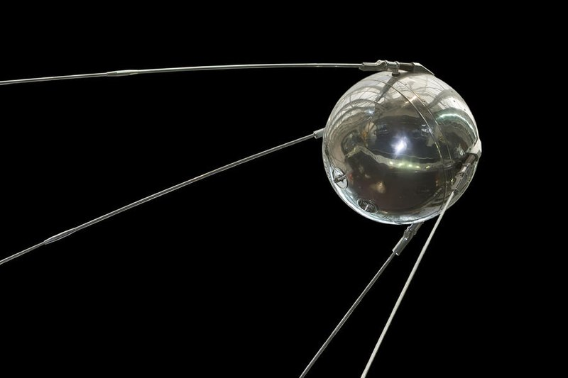
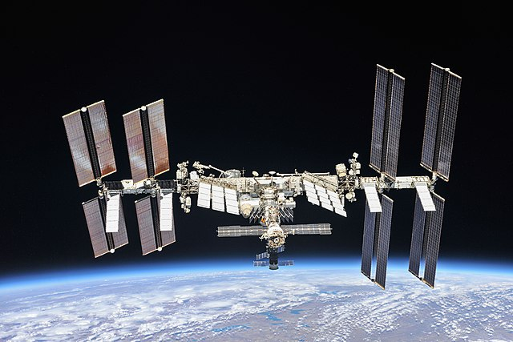
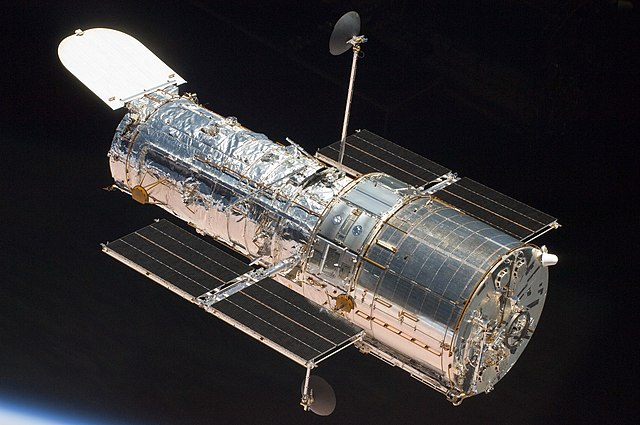
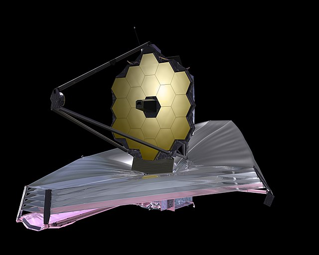

Humans have made many satellites orbiting Earth and other celestial bodies that have been created for various purposes. Here are some of the most famous and important ones:

Sputnik I
Sputnik I was the first man-made object to reach low Earth orbit.
It was created by the Soviet Union and was launched on 4 October 1957.
Its successful launch marked the beginning of the Space Age and the "Race for Space", a race between the Soviet Union and USA to be the first country to land people on the moon.
As it orbited, it produced radio waves to communicate with the Soviet space prgram on the ground, which were also interpreted by NASA into a now famous series of beeps:
The name "Sputnik" translates to "co-wayfarer".
Orbit Path around Earth (Speed and distance from Earth is approximately to scale):
3600x speed

International Space Station
The International Space Station, or ISS for short, is the largest space station to ever orbit Earth. It consists of 16 modules that were lionked togther in space over 10 years to form one station.
It was made with the collabrative effort of 5 space agencies that represented 15 countries.
It is used as a research facility to find out more about our planet and space.
Orbit Path around Earth (Speed and distance from Earth is approximately to scale):
3600x speed

Hubble Space Telescope
The Hubble Space Telescope is one of the largest and most versatile space telescopes ever created. Its instruments can observe ultraviolet, visible and near-infrared light to create images of deep space.
Unlike normal telescopes, space telescopes have the advantage of not having to see through Earth's atmosphere, allowing them to create images of galaxies and stars billions of light-years away.
Orbit Path around Earth (Speed and distance from Earth is approximately to scale):
3600x speed

James Webb Telescope
The James Webb Telescope is the largest human-made optical telescope in space, which uses infrared to capture images of deep space using high-resolution and high-sensitivty instruments that allows it to take images of objects the Hubble telescope was unble to see.
Unlike the other satellites mentioned, Webb does not orbit the earth, but instead orbits the Sun. This means that it is not in the shadow of the moon at any time, and so can be constantly scanning the universe.
It orbits the sun at approximately 151.5 million km, or 1.5 million km further from the Sun than Earth. It also stays in line with Earth as it orbits the sun to help protect it from the light and heat from the Sun.
Orbit Path around the Sun (Speed and distance from the Sun is approximately to scale, and yes, the sun is that tiny yellow pixel in the middle):
 History
History Planets
Planets Satellites
Satellites Missions
Missions Quiz
Quiz